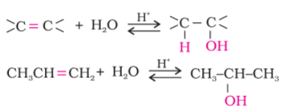
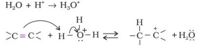
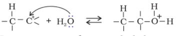
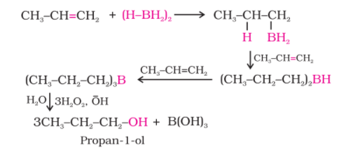

Definition
- In chemistry, an alcohol is any organic compound in which the hydroxyl functional group (–OH) is bound to a saturated carbon atom. The term alcohol originally referred to the primary alcohol ethanol (ethyl alcohol), the predominant alcohol in alcoholic beverages.
- Example :Ethanol-C2H5-OH
Applications
Alcohol has a long history of several uses worldwide. It is found in alcoholic beverages sold to adults, as fuel, and also has many scientific, medical, and industrial uses.
- Alcoholic Beverages
- Antifreeze
- Fuels
- Preservative
- Solvent
Physical Properties
Alcohols and phenols consist of two parts, an alkyl/aryl group and a hydroxyl group. The properties of alcohols and phenols are chiefly due to the hydroxyl group. The nature of alkyl and aryl groups simply modify these properties.
Boiling Points
The boiling points of alcohols and phenols increase with increase in the
number of carbon atoms (increase in van der Waals forces). In alcohols,
the boiling points decrease with increase of branching in carbon chain
(because of decrease in van der Waals forces with decrease in surface
area).The –OH group in alcohols and phenols is involved in intermolecular hydrogen bonding as shown below:

It is interesting to note that boiling points of alcohols and phenols are higher in comparison to other classes of compounds, namely hydrocarbons, ethers, haloalkanes and haloarenes of comparable molecular masses. For example, ethanol and propane have comparable molecular masses but their boiling points differ widely. The boiling point of methoxymethane is intermediate of the two boiling points.

The high boiling points of alcohols are mainly due to the presence of intermolecular hydrogen bonding in them which is lacking in ethers and hydrocarbons.
Solubility
Solubility of alcohols and phenols in
water is due to their ability to form
hydrogen bonds with water molecules
as shown. The solubility decreases with
increase in size of alkyl/aryl (hydro-
phobic) groups. Several of the lower
molecular mass alcohols are miscible
with water in all proportions.
Preperation of Phenols
Alcohols are prepared by the following methods:
From Alkenes
(i) By acid catalysed hydration:
Alkenes react with water in thepresence of acid as catalyst to form alcohols. In case of unsymmetrical alkenes, the addition reaction takes place in accordance with Markovnikov’s rule.

Mechanism
The mechanism of the reaction involves the following three steps:
Step 1: Protonation of alkene to form carbocation by electrophilic attack of H3O+

Step 2: Nucleophilic attack of water on carbocation.

Step 3: Deprotonation to form an alcohol.

(ii) By hydroboration–oxidation:
Diborane (BH3)2 reacts with alkenes to give trialkyl boranes as addition product. This is oxidised to alcohol by hydrogen peroxide in the presence of aqueous sodium hydroxide.
The addition of borane to the double bond takes place in such a manner that the boron atom gets attached to the sp2 carbon carrying greater number of hydrogen atoms. The alcohol so formed looks as if it has been formed by the addition of water to the alkene in a way opposite to the Markovnikov’s rule. In this reaction, alcohol is obtained in excellent yield.
From carbonyl compounds
(i) By reduction of aldehydes and ketones:
Aldehydes and ketonesare reduced to the corresponding alcohols by addition of
hydrogen in the presence of catalysts (catalytic hydrogenation).
The usual catalyst is a finely divided metal such as platinum,
palladium or nickel. It is also prepared by treating aldehydes
and ketones with sodium borohydride (NaBH4) or lithium
aluminium hydride (LiAlH4). Aldehydes yield primary alcohols
whereas ketones give secondary alcohols.

(ii) By reduction of carboxylic acids and esters:
Carboxylic acids are reduced to primary alcohols in excellent yields by lithium aluminium hydride, a strong reducing agent.

However, LiAlH4 is an expensive reagent, and therefore, used for preparing special chemicals only. Commercially, acids are reduced to alcohols by converting them to the esters, followed by their reduction using hydrogen in the presence of catalyst (catalytic hydrogenation).
From Grignard reagents
Alcohols are produced by the reaction of Grignard reagents with aldehydes and ketones. The first step of the reaction is the nucleophilic addition of Grignard reagent to the carbonyl group to form an adduct. Hydrolysis of the adduct yields an alcohol.

The overall reactions using different aldehydes and ketones are as follows:

You will notice that the reaction produces a primary alcohol with methanal, a secondary alcohol with other aldehydes and tertiary alcohol with ketones.
Reactions of alcohols
(a) Reactions involving cleavage of O–H bond
1. Acidity of alcohols(i) Reaction with metals:
Alcohols react with activemetals such as sodium, potassium and aluminium to yield corresponding alkoxides/phenoxides and hydrogen.

The above reactions show that alcohols are acidic in nature. In fact, alcohols and phenols are Brönsted acids i.e., they can donate a proton to a stronger base (B:).

(ii) Acidity of alcohols: The acidic character of alcohols is due tothe polar nature of O–H bond. An electron-releasing group (–CH3, –C2H5) increases electron density on oxygen tending to decrease the polarity of O-H bond. This decreases the acid strength. For this reason, the acid strength of alcohols decreases in the following order:

Alcohols are, however, weaker acids than water. This can be illustrated by the reaction of water with an alkoxide.

This reaction shows that water is a better proton donor (i.e., stronger acid) than alcohol. Also, in the above reaction, we note that an alkoxide ion is a better proton acceptor than hydroxide ion, which suggests that alkoxides are stronger bases (sodium ethoxide is a stronger base than sodium hydroxide).
Alcohols act as Bronsted bases as well. It is due to the presence of unshared electron pairs on oxygen, which makes them proton acceptors.
(b) Reactions involving cleavage of carbon – oxygen (C–O) bond in alcohols
The reactions involving cleavage of C–O bond take place only in alcohols. Phenols show this type of reaction only with zinc.1. Reaction with hydrogen halides:
Alcohols react with hydrogen
halides to form alkyl halides.
ROH + HX → R–X + H2O
The difference in reactivity of three classes of alcohols with HCl
distinguishes them from one another (Lucas test). Alcohols are soluble
in Lucas reagent (conc. HCl and ZnCl2) while their halides are immiscible
and produce turbidity in solution. In case of tertiary alcohols, turbidity
is produced immediately as they form the halides easily. Primary
alcohols do not produce turbidity at room temperature.